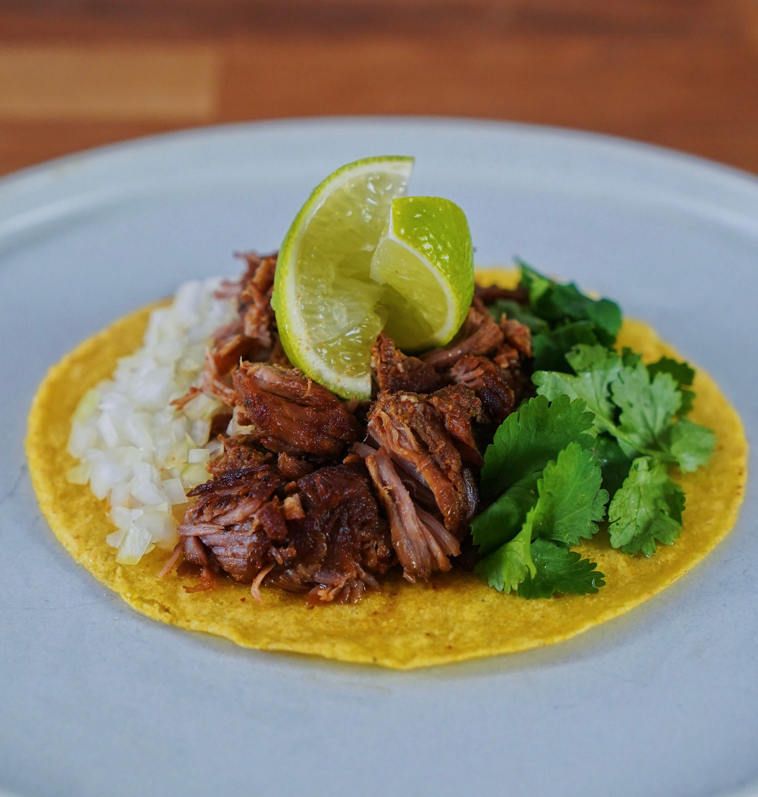

Dami's Tacos

Description
Tacos.
Ingredients
- pork shoulder (collar / butt) (cut into chunks)
- 4 tsp ground cumin
- 4 tsp smoked paprika
- 2 tsp chilli powder
- 2 tsp marjoram
- 4 large pinches of kosher / flaky salt
- 1 large orange (zest and juice)
- Lard or Tallow (enough to cover meat)
- 4 garlic cloves
- 2 bay leaves
- 1 large cinnamon stick
- Lime
- White onion
- Coriander
Steps
- Mix together the ingredients for the marinade in a bowl - cumin, paprika, chilli powder, marjoram, salt, orange zest and juice. Add the pork, toss in the spices and leave to marinate in the fridge overnight.
- Preheat a fan oven to 110 C / 230 F. Heat a large pan of lard to 95 C / 203 F and place in the marinated pork. Cook in the lard for a few minutes then add in the rest of the ingredients. Put a lid on top of the pan, and place into the oven. Cook for 2 - 2.5 hours until juicy and tender.
- Once cooked, remove the pan from the oven and leave the meat to cool in the liquid (helps maintain the juices in the pork).
- Once at room temperature, place the meat into a roasting tray and cook under the grill until slightly crisped on top. Remove and set aside until ready to use for the tacos.
- Grab yourself a warm corn tortilla and fill it up with lots of the pork. Add some finely diced white onion and coriander, squeeze over some lime juice and drizzle a little of the flavour-packed lard that the meat cooked in.